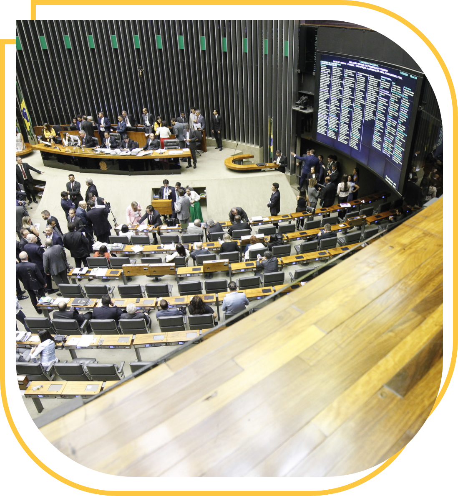
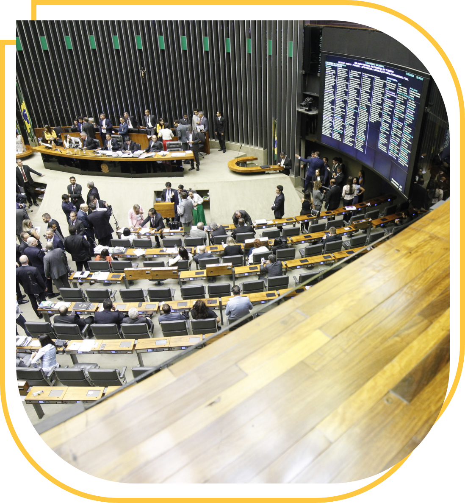

Direitos Humanos na visão contemporânea
A compreensão de que os direitos humanos são socialmente construídos e resultado de lutas sociais contra arbítrios e autoritarismos é fundamental para a educação cidadã e a resistência política em defesa de uma nova cultura e sociedade. Direitos não são meras concessões do Estado; emergem das relações sociais nas dimensões da liberdade, igualdade e solidariedade.
As lutas sociais, promovidas por diversos sujeitos coletivos, como movimentos populares e organizações da sociedade civil, geram condições políticas e sociais para novas conquistas democráticas. Um exemplo é o Estatuto da Criança e do Adolescente (ECA – Lei nº 8.069/1990), regulamentado pelo engajamento dessas organizações.
Vamos conhecer melhor esse assunto na interação abaixo:
Conquistas sociais
Os direitos humanos são fruto de conquistas sociais concretas pela dignidade e democratização do acesso ao que é coletivamente construído. Eles representam expressões da liberdade conquistada e são esforços para garantir melhores e iguais condições de vida. Importante ressaltar que os direitos humanos estão intrinsecamente relacionados às formas de organizar a vida, incluindo a esfera privada, afetando as relações sociais e familiares. Assim, eles são indissociáveis da democratização da vida e da participação social.
Jusnaturalismo e Liberalismo
Diversas concepções ao longo da história tentam definir códigos morais. Destacam-se as interpretações naturalistas, que desconsideram as condições concretas de efetivação dos direitos como naturais e universais. O jusnaturalismo, conforme Escrivão Filho e Sousa Junior (2016), fundamenta-se na noção de uma natureza humana preexistente, o que pode levar à naturalização de desigualdades. Em contrapartida, a visão juspositivista, que se concentra na legislação vigente, limita os direitos humanos aos formalmente estabelecidos, gerando injustiças e aprofundando desigualdades sociais.
Na perspectiva liberal, os direitos humanos são vistos como garantias das liberdades fundamentais, priorizando os direitos individuais e civis em detrimento dos direitos sociais. Em contraste, a concepção histórico-crítica entende os direitos humanos como construções sociais sujeitas às contradições da realidade (Silveira, 2019). A efetivação dos direitos fundamentais requer a valorização das liberdades individuais e a criação de condições sociais, econômicas e culturais que assegurem sua efetividade.
Dignidade humana
A dignidade humana é um valor central na luta contra exploração, opressão e desigualdade. Os direitos humanos, nessa perspectiva, são conquistas fundamentais em direção à emancipação política e humana (Silveira, 2019). Embora seja fundamental estabelecer direitos humanos em instrumentos normativos, garantir sua efetividade é igualmente essencial.
Contrariando concepções evolucionistas, os direitos humanos são indivisíveis, interdependentes e integrais. A indivisibilidade indica que os direitos humanos estão ligados nas relações sociais e se realizam simultaneamente. A interdependência mostra que a efetivação de um direito é condição para outros. A integralidade implica que os direitos devem ser exigidos, reconhecidos e garantidos em sua totalidade (Escrivão Filho e Souza Junior, 2016, pp. 41-43).
Universal e fundacional
Segundo Santos (2013), o universal é o que se afirma como válido independentemente do contexto, enquanto o fundacional representa uma identidade específica. A compreensão da história sob diferentes abordagens é necessária para afirmar elementos universais, muitas vezes enraizados em imposições culturais e políticas.
Efetivando direitos
A invisibilidade dos direitos humanos está ligada às relações sociais cotidianas. Essa perspectiva se reflete na realidade, onde a interdependência entre direitos é essencial. A integralidade também expressa a exigibilidade dos direitos humanos, sustentando o aspecto político da luta por eles.
A efetivação dos direitos humanos envolve uma combinação de aspectos normativos, políticos, sociais e econômicos (Carballido, 2014, p. 48). A materialização desses direitos requer desconstruir a cultura de insensibilidade e desigualdade, e promover a participação da sociedade civil em espaços de controle democrático.
 

Os direitos humanos nas agendas internacionais surgem da realidade concreta e complexa, expressando uma lógica política de interesse. Eles refletem uma interconexão entre o global e o local, fundamentais para políticas públicas e a promoção de uma cultura de respeito.
Dessa forma, os direitos humanos são construções históricas, resultantes de conflitos e polaridades, afirmando a indivisibilidade e interdependência dos direitos. Ao invés de uma construção linear, essa é cíclica, desenvolvendo-se conforme contextos sociais e políticos.
Desigualdade, Racismo Estrutural e a Luta por Direitos Humanos
A população em áreas desiguais enfrenta as consequências do racismo estrutural e institucional, que negam diferenças e contribuem para diversas formas de violência. Os territórios brasileiros evidenciam desigualdades agravadas pela colonialidade e acesso desigual a bens sociais (Silveira et al., 2021).
Os direitos humanos devem ser vistos como processos que abrem e consolidam espaços de luta pela dignidade humana. A crítica das desigualdades históricas torna-se central, e a fragilidade da resposta estatal na estruturação de políticas públicas democráticas evidencia a necessidade de ação coletiva.
Abaixo, clique nos botões para conhecer mais sobre a aplicabilidade dos direitos humanos atualmente:
Formação de cidadãos
Um trabalho em rede nas políticas públicas requer análise crítica dos territórios, suas demandas e potencialidades. A importância dos direitos humanos nas escolas é evidente, especialmente no combate a opressões como racismo e machismo. As escolas desempenham um papel essencial na formação de cidadãos críticos e respeitosos.
Além da legislação
Os direitos humanos vão além das legislações em regimes democráticos, envolvendo respeito às diversidades e participação nas decisões políticas que impactam a vida das populações mais afetadas. Em um contexto de crise social, os direitos humanos representam uma construção histórica contra a negação da dignidade humana.
Direito internacional
Os desafios contemporâneos demandam reconhecer a centralidade das pessoas na sociedade, valorizando a diversidade e a universalização de direitos em contextos desiguais. A Conferência Mundial sobre Direitos Humanos em Viena, em 1993, reafirmou a universalidade dos direitos humanos, estabelecendo sua aplicabilidade a todas as pessoas, sem exceção.
O que significa um giro decolonial?
O "giro decolonial" é um movimento intelectual que questiona as estruturas de poder e conhecimento impostas pelo colonialismo e a modernidade ocidental. Ele propõe um afastamento das epistemologias eurocêntricas e valoriza os conhecimentos marginalizados. Associado ao projeto Modernidade/Colonialidade, tem como principais teóricos Aníbal Quijano, Walter Mignolo e Enrique Dussel. Mignolo é frequentemente creditado por popularizar o termo, que reflete um esforço coletivo para superar as heranças coloniais.
Conferência Mundial sobre Direitos Humanos
A Conferência Mundial sobre Direitos Humanos, realizada em Viena em 1993, foi um evento marcante na história dos direitos humanos, reafirmando e ampliando a concepção contemporânea desses direitos. Aqui estão os principais pontos que explicam essa concepção de acordo com a Conferência de Viena:
A Conferência de Viena reafirmou a universalidade dos direitos humanos, estabelecendo que esses direitos são aplicáveis a todas as pessoas, em todos os lugares, sem exceção. Isso significa que os direitos humanos são inerentes a todos os seres humanos, independentemente de nacionalidade, etnia, religião, gênero ou qualquer outra característica.
Um dos pontos essenciais da conferência foi a afirmação de que todos os direitos humanos são indivisíveis, interdependentes e inter-relacionados. Direitos civis, políticos, econômicos, sociais e culturais têm a mesma importância e devem ser promovidos e protegidos de maneira equilibrada. A realização de um direito frequentemente facilita a realização de outros.
A integralidade dos direitos humanos foi outro aspecto destacado. Isso implica uma abordagem holística na qual os direitos humanos são vistos como um todo integrado, onde a violação de um direito afeta a realização de outros. A proteção dos direitos humanos deve, portanto, ser completa e abrangente, sem omitir qualquer aspecto.
A Conferência de Viena enfatizou a responsabilidade primária dos Estados em promover e proteger os direitos humanos. Os Estados são responsáveis por criar condições favoráveis para a realização plena de todos os direitos e liberdades fundamentais, adotando legislações e políticas apropriadas.
A Declaração de Viena reconhece que a democracia, o desenvolvimento e o respeito aos direitos humanos são interdependentes e se reforçam mutuamente. A participação ativa da sociedade civil, a transparência e a responsabilidade governamental são essenciais para a promoção dos direitos humanos.
A conferência deu uma ênfase especial à proteção dos direitos das mulheres, crianças, povos indígenas, minorias e outros grupos vulneráveis. Foi reconhecida a necessidade de eliminar todas as formas de discriminação e violência contra esses grupos, promovendo a igualdade e a inclusão.
A conferência destacou a importância da cooperação internacional para a promoção e proteção dos direitos humanos. Os Estados foram incentivados a colaborar uns com os outros e com organizações internacionais para enfrentar desafios globais e promover os direitos humanos em todo o mundo.